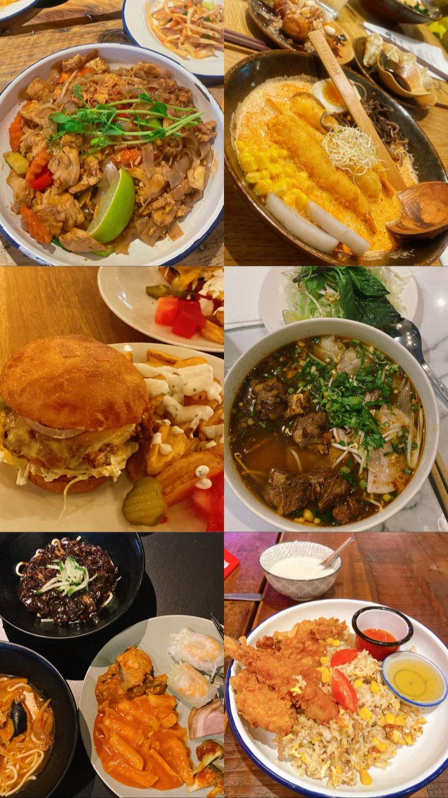

Moving to Helsinki, the capital of Finland, with a lot of interesting different cuisines, I believe in the future years, I will have chances to discover the city and Finland.
So one of the reason for the website is that this website will be not only for memorizing but also as a guideline for people who are new here.
Another reason would be because when I first came to Helsinki, I did not know much places to eat out, especially when I was craving for some Vietnamese food or some street food.
Therefore, I have googled and seen some websites, with reviews and photos, which looked interesting to me.
Luckily enough that I have chances to try new restaurants and discover some very interesting sites. However, not every places that I have visited are suitable for my taste as well as meet my expectation.
Moreover, I have a tendency to take a lot of food and places photos fullfiled with memories and emotions that I would like to share.
To be honest, the first idea for the website is like a check-in lists, so that I would have an "official" site to recommend to my friends, or to look back when I want to eat out.
And finally, I am not a big fan of other social media like Instagram and Facebook, so I find this website is a hidden corner, which is still private but somehow public.
Therefore, here it is - welcome to Food Corner!